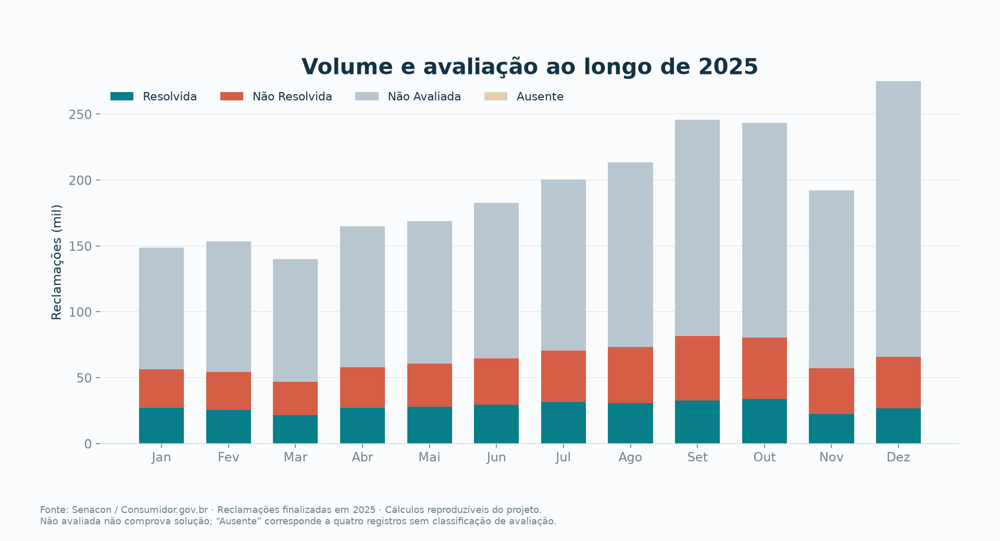
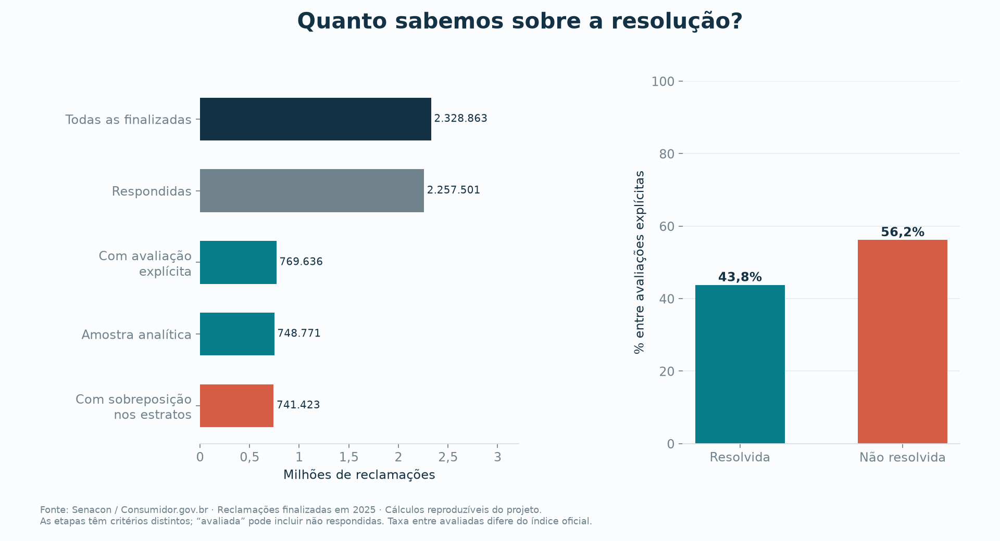
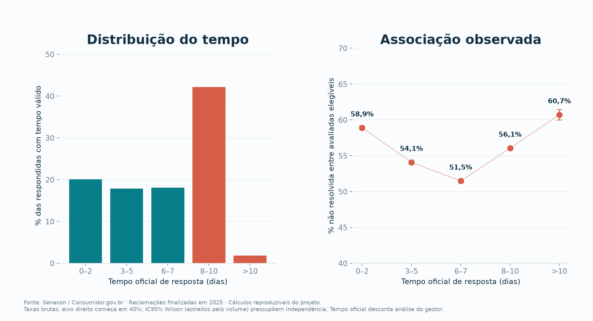
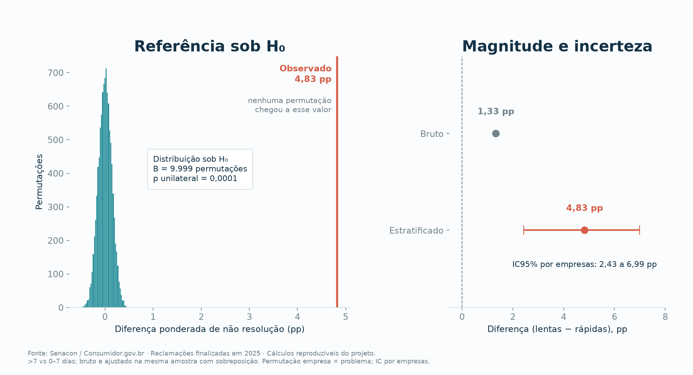
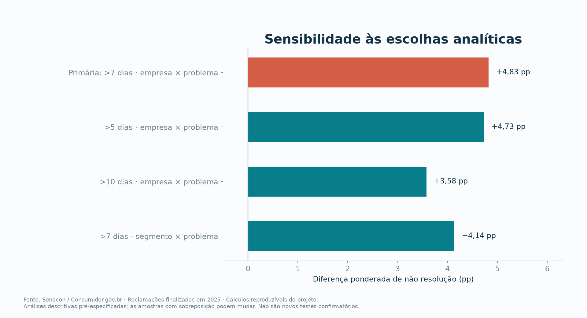
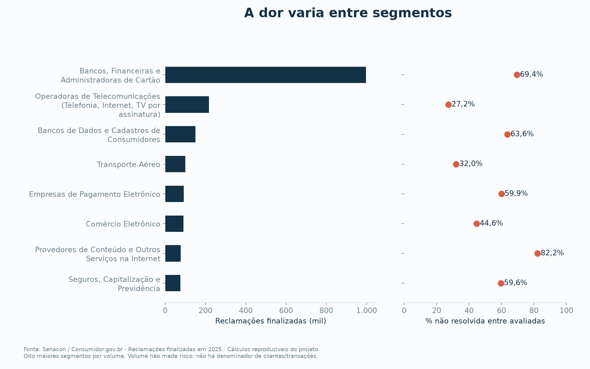

Demorar para responder está associado a mais reclamações sem solução
Antes de construir um sistema de gestão de chamados, este estudo verifica com dados públicos se a dor existe. Foram analisadas 2,3 milhões de reclamações finalizadas em 2025, e a hipótese foi testada com permutação estratificada por empresa e tipo de problema.
1. A dor existe e é grande
O Consumidor.gov.br recebe conflitos de consumo que as empresas não resolveram no primeiro atendimento: 77,7% dos consumidores dizem ter procurado a empresa antes. O volume cresceu ao longo de 2025, mas só cerca de um terço dos casos recebe avaliação explícita. Por isso, todas as taxas de resolução abaixo usam como denominador apenas as reclamações avaliadas.


2. Responder não é resolver
Quase todas as reclamações recebem resposta (96,9%), mas a resposta muitas vezes não resolve o problema. A curva de não resolução por tempo tem forma de “U”. Respostas em 0 a 2 dias têm 58,9% de não resolução, possivelmente respostas padronizadas que encerram o caso sem tratá-lo. O ponto mais baixo fica em 6 a 7 dias (51,5%), e depois a taxa volta a subir até 60,7% acima de 10 dias.

Isso já define um requisito de produto: o sistema precisa medir o prazo e também a solução confirmada, para não premiar respostas rápidas e vazias.
3. Hipóteses
A diferença bruta entre respostas lentas e rápidas é de apenas 1,33 pp, porque compara empresas e problemas muito diferentes entre si. O teste corrige isso comparando casos dentro de cada combinação de empresa e grupo de problema.
O corte de 7 dias, a direção do teste e o nível de significância foram registrados no plano de análise antes do cálculo dos resultados. Sete dias é um corte analítico, não um prazo legal.
4. Teste de permutação
- Em cada um dos 4.121 estratos comparáveis, mantém-se fixo quantos casos foram lentos e quantos ficaram sem solução.
- Sob H₀, os rótulos “resolvida” e “não resolvida” são embaralhados entre os casos do estrato.
- Calcula-se a diferença ponderada
T = Σ (nₛ/N) · (p_lentaₛ − p_rápidaₛ). - Repete-se 9.999 vezes. O p-valor é
(b + 1) / (B + 1), em quebé o número de embaralhamentos com T igual ou maior que o observado.

O resultado depende das escolhas?

5. Onde a dor se concentra

6. Do dado ao produto
| Evidência | Requisito do sistema de chamados | Métrica para validar no piloto |
|---|---|---|
| +4,83 pp de não resolução acima de 7 dias | Fila com prazos (SLA) configuráveis e alertas antes do vencimento | % respondida no prazo e percentil 90 do tempo |
| Respostas em 0 a 2 dias também falham (58,9%) | Separar “respondido” de “solução confirmada pelo cliente” | Resolução confirmada e taxa de reabertura |
| 77,7% já tinham procurado a empresa | Histórico único de interações por cliente | Recontatos por caso |
| Desempenho varia por empresa e tipo de problema | Triagem por categoria e atribuição de responsável | Tempo até atribuição e número de transferências |
| 67% dos casos não têm avaliação | Pesquisa de satisfação no encerramento | Cobertura de avaliação |
Limites
- Associação, não causa. Casos mais complexos podem ser, ao mesmo tempo, mais demorados e mais difíceis de resolver. A estratificação reduz esse problema, mas não o elimina.
- Seleção. Só 33% das reclamações são avaliadas, e a base contém apenas conflitos que chegaram à plataforma, não todo o atendimento das empresas.
- Eficácia do sistema não testada. Saber se um sistema de chamados reduz a não resolução exige um piloto, de preferência com adoção randomizada por equipe ou fila. O desenho está no relatório completo.